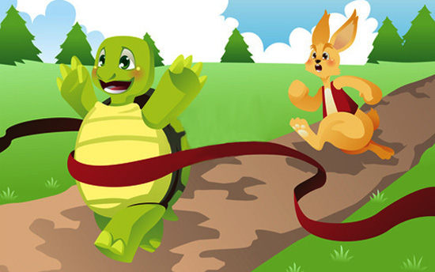
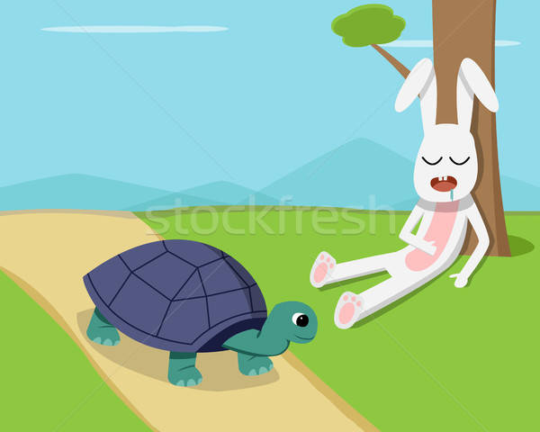
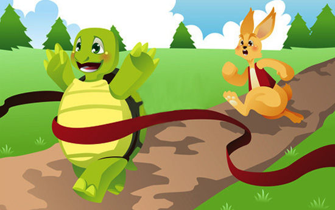
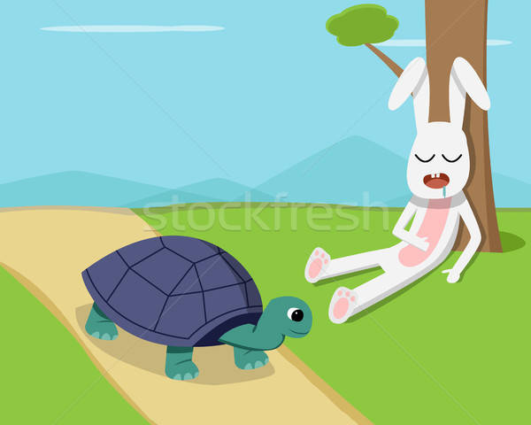

The Rabbit And The Tortoise Story
One day a rabbit and a tortoise meet in the forest.
(bir gün bir tavşan ve kaplumbağa ormanda karşılaşırlar.)
The rabbit teases the tortoise,”You are slow but I am fast.
(tavşan kaplumbağayla alay eder.)(sen yavaşsın ben hızlıyım der.)
I can run very fast but you can’t.”
(ben çok hızlı koşabilirim ama sen koşamazsın der)
The tortoise is angry with the rabbit.
(kaplumbağa tavşana kızar.)
He challenges,”Let’s have a race!”
(meydan okur.)(hadi yarışalım der.)
The next day the rabbit and the tortoise meet under a tree.
(Ertesi gün tavşan kaplumbağayla bir ağacın altında buluşur.)
A fox comes along and starts the race.
(bir tilki gelir ve yarışı başlatır.)
“Ready, steady, go!”says the fox.
( hazır ol,başla!)(der tilki)
The rabbit runs and runs.
(tavşan koşar ve koşar.)
And then he stops and turns back.
(ve durur arkasına bakar.)
There is no tortoise.The rabbit thinks,
(kaplumbağa yoktur.)(tavşan düşünür.)
”The tortoise is slow.I am fast.
(kaplumbağa yavaş)(ben hızlıyım)
I will go under a tree and rest.”
(bir ağacın altına gidip dinleneceğim.)
The rabbit goes under a tree, crosses his legs.
(tavşan bir ağacın altına gider ve bacak bacak üstüne atar)
He yawns and goes to sleep.In his sleep He snores.
(esner ve uyur.)(uykusunda horlar.)
He usually itchs.He often coughs.He rarely laughs.
(sürekli kaşınır.)(sık sık öksürür.)(nadiren güler.)
He never burps.(nadiren güler.)
(hiç genirmez.)(bazen hıçkırır.)
He sometimes sneezes.His stomack rumbles.
(bazen hapşurur.)(karnı guruldar.)
He sometimes passes the wind.
(bazen gaz çıkarır.)
The tortoise walks slowly but steadily.
(kaplumbağa yavaş ama durmadan yürür.)
He goes to the finishing line.
(bitiş çizgisine gider.)
All the animals applaud him.He becomes the champion.
(bütün hayvanlar onu alkışlar.)(o şampiyon olur.)
They give him a medal.
(ona bir madalya verirler.)
 


